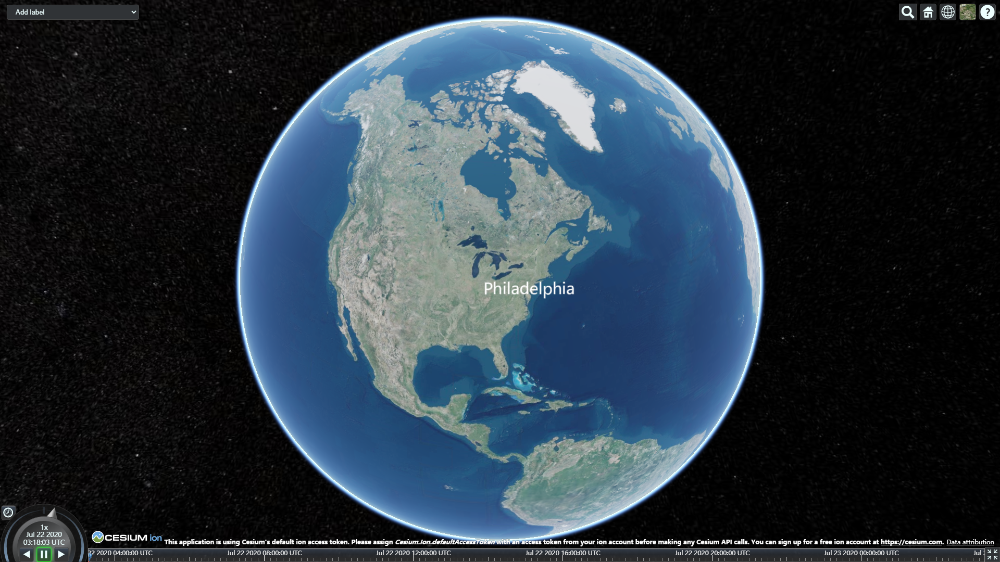
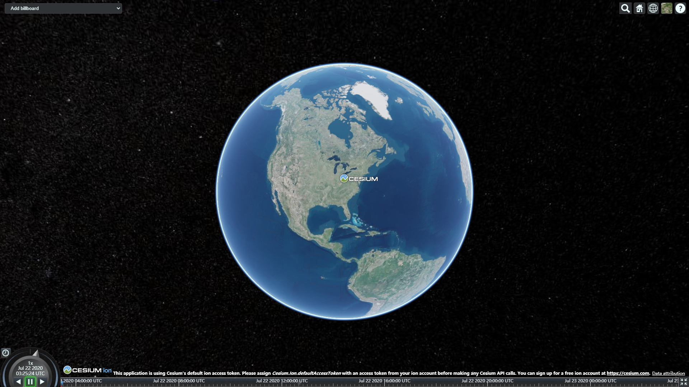
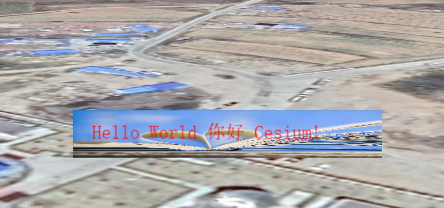

基于Cesium Billboard的图文标注
背景
项目需求：在模型上方添加文字标注，背景是一张图片。
如果只是加文字的话，Cesium 直接加一个label就行了，或者只加一个图片，Cesium 直接加一个 billboard 也是可以的。如果是两者结合是需要另外处理的。
单独文字
单独加文字可以直接用 label, 伪代码如下：
Javascript
1 | viewer.entities.add({ |
效果： 
单独加图片
单独显示图片使用 billboard, 伪代码如下：
Javascript
1 | viewer.entities.add({ |
效果： 
图文结合
思路：根据原始添加图片的过程，再结合 billboard 文档的查看其中的 image 定义：
Code1
2
3image : StringScene/Billboard.js 910
Gets or sets the image to be used for this billboard. If a texture has already been created for the given image, the existing texture is used.
This property can be set to a loaded Image, a URL which will be loaded as an Image automatically, a canvas, or another billboard's image property (from the same billboard collection).This property can be set to a loaded Image, a URL which will be loaded as an Image automatically, a canvas, or another billboard’s image property (from the same billboard collection).
可以将此属性设置为已加载的图像，将自动作为图像加载的URL，画布或其他广告牌的图像属性（来自同一广告牌集合）。上述文字说明 image 可以是 canvas, 那我们就可以把图片和文字画到 canvas 中，最后把结果赋值给 image 就行了。
实现：
绘制图文方法
//根据图片和文字绘制canvas ratio参数 是放大倍数 function drawCanvas(img, text, ratio) { // width height var canvas = document.createElement('canvas'); //创建canvas标签 var ctx = canvas.getContext('2d'); var width = ctx.measureText(text).width + 8, height = 20; //高度我这里是定死的，可以作为参数参入 canvas.style.opacity = 1; canvas.width = width * ratio; canvas.height = height * ratio; canvas.style.width = width + 'px'; canvas.style.height = height + 'px'; //然后将画布缩放，将图像放大ratio倍画到画布上 目的 是图片文字更加清晰 ctx.scale(ratio, ratio); var image = new Image(); image.src = img; // 图片创建是异步操作，需要在图片完成之后，再写入文字，能保证文字在图片上方。 // 如果不在里面，会出现图片覆盖文字 image.onload = function () { ctx.drawImage(image, 0, 0, width, height); // 名称文字 ctx.fillStyle = '#ff0000'; ctx.font = '8px 宋体'; ctx.fillText(text, 8, height / 2 + 2); }; return canvas; }- 加载到Cesium中
viewer.entities.add({ position: Cesium.Cartesian3.fromDegrees( 109.05830792532525, 37.44105749283626, 16 ), billboard: { image: drawCanvas('./source/images/bg.png', 'Hello World 你好 Cesium!', 3), sizeInMeters: true, scale: 0.1, }, }); - 效果：



{kind=link}
{kind=link}
{kind=link}